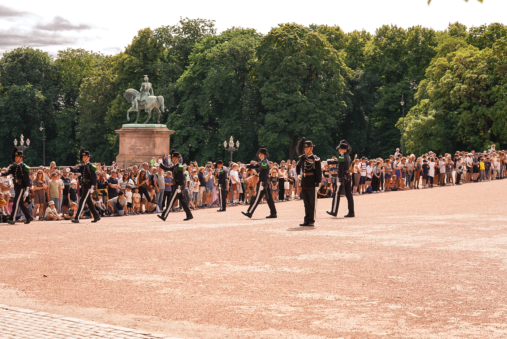
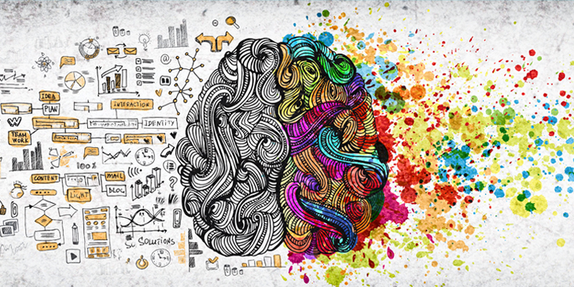

I'm Markus, a Cognitive Science student
at the University of Bergen UIB.
Currently enrolling on my third semester
Portfolio
I'm a Cognitive Science student from Oppegård, Norway.
I have a passion for exploring the intersections of mind, and technology, combining analytical thinking with creativity.
Experience: python, java, R & prolog.


About Me
Throughout my life, I've had a passion for cross-country skiing. I followed my passion and moved to Hovden, where I started at Hovden Skigymnas. This experience made me a self-driven, independent athlete. I utilized my experience with cross-country skiing by becoming a coach at Oppegård IL.
I've served 12 months at His Majesty the Kings Guard.
I've gained many valuable experiences throughout my studies.
Contact
Do you have any questions? Reach out!
Mail: markussellevoll@gmail.com
Tlf: +47 94 19 94 93
LinkedIn: linkedin.com